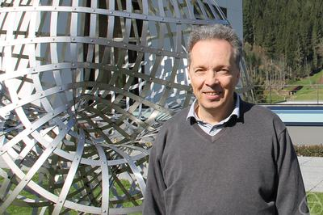
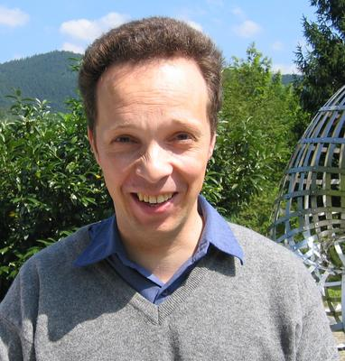
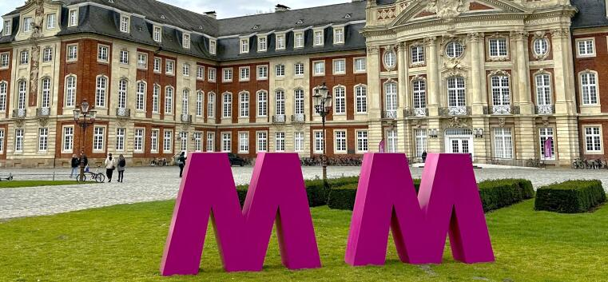

Registration
Registration, possible participant support, and childcare information will be posted here once confirmed.
Conference in Münster · 2027
A conference in honour of Christoph Schweigert’s 60th birthday.

2026
200501 / About
The conference focuses on interactions between quantum field theory, category theory, and representation theory. It brings together leading experts and young researchers from these and related fields to foster mathematical exchange and new collaborations.
Recent years have seen major developments in tensor and fusion categories, higher categorical structures in quantum field theory, vertex operator algebras, and representation theory. The conference will provide a forum to discuss these advances and explore new research directions across mathematics and mathematical physics.
The meeting celebrates Christoph Schweigert’s 60th birthday. His work has been central in shaping these developments and in building bridges between algebraic, geometric, and physical perspectives.
02 / Speakers
03 / Organisation
04 / Programme & participation
Each scientific talk is scheduled for one hour. The times below are preliminary; speaker names and final session details will be added later.
Registration, possible participant support, and childcare information will be posted here once confirmed.
The conference will take place at the University of Münster. Rooms, directions, accommodation, and travel details will follow.

For preliminary enquiries about the conference, please contact one of the organisers.